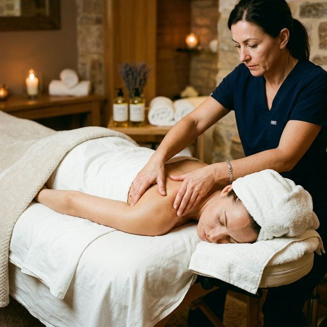
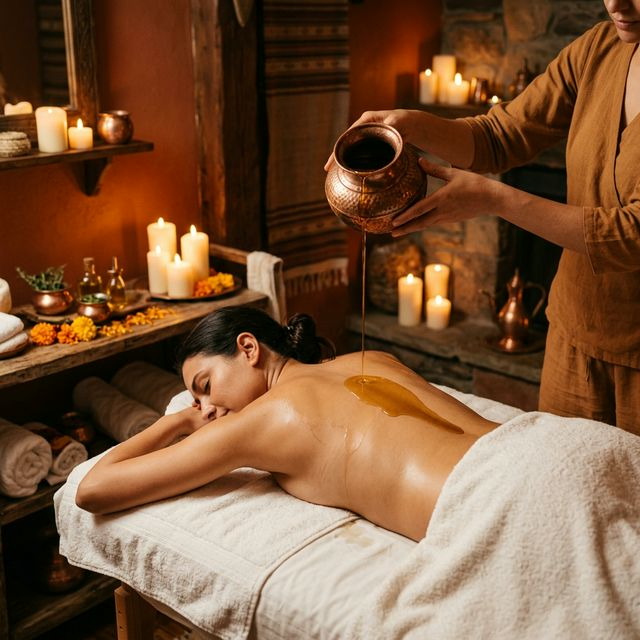
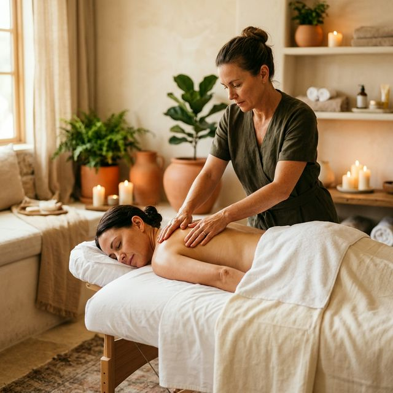

Tu terapeuta personal de masajes a domicilio en Barcelona
Mis tratamientos en Barcelona
Masajes a domicilio en Barcelona para cada necesidad

Más popularMasaje Descontracturante a Domicilio
Ideal para aliviar tensiones profundas
Mi especialidad es el masaje descontracturante suave, sin presiones excesivas, trabajando desde el cuerpo relajado. El alivio del dolor de espalda puede y debe ser placentero.
🛋️ En tu sofá o cama · Sin camilla · Sin aparatos

Ritual holísticoMasaje Ayurveda a Domicilio
Ritual holístico para equilibrar cuerpo y mente
Terapia relajante en casa basada en la medicina india milenaria. Aceites calientes que equilibran cuerpo y mente, eliminan toxinas y renuevan tu energía vital.
🛋️ En tu sofá o cama · Solo necesitas un par de toallas

DesconexiónMasaje Relajante a Domicilio
Suave y reconfortante para reducir el estrés
Una experiencia de relajación total. Movimientos fluidos y suaves diseñados para calmar el sistema nervioso, reducir el estrés y promover un descanso profundo en la comodidad de tu hogar.
🛋️ En tu sofá o cama · Ambiente tranquilo
 7 años de experiencia
7 años de experiencia
Tu terapeuta personal
Hola, soy Oscar 👋
Todo empezó hace 7 años, casi por accidente. Mi pareja sufría contracturas crónicas y comencé a trabajar sus músculos con las manos, sin formación, solo con intuición. En pocas semanas el dolor desapareció. Fue entonces cuando entendí que tenía un talento natural para encontrar el origen exacto de cada dolencia y disolverlo.
Me formé en masaje terapéutico y más tarde en la técnica del masaje Ayurveda, profundizando en la medicina india y el poder de los aceites herbales calientes. Hoy combino ambas disciplinas para ofrecer sesiones únicas, adaptadas a lo que cada persona necesita en ese momento.
Mi filosofía es clara: el alivio del dolor puede y debe ser placentero. Por eso trabajo siempre desde el cuerpo relajado, con presiones suaves y progresivas, respetando tu ritmo. Llego a tu casa, me adapto a tu sofá o cama, y me voy cuando tú estás verdaderamente mejor.
Lo que dicen ellos
Lo que dicen sobre mí
Llego a toda el área metropolitana
Servicio disponible en los siguientes municipios y barrios:
Preguntas frecuentes
Cobertura geográfica
Zonas en las que trabajo
Servicio exclusivo 100% a domicilio en Barcelona ciudad y área metropolitana. Me desplazo a tu dirección; no existe ningún local al que debas acudir.
Barcelona Ciudad
- ✅ Eixample · Gràcia · Sarrià
- ✅ Sant Gervasi · Les Corts
- ✅ Poble Nou · Poblenou
- ✅ Sant Pere · Barceloneta
- ✅ Sants · Montjuïc · Horta
- ✅ Nou Barris · Sant Andreu
Área Metropolitana
- ✅ L'Hospitalet de Llobregat
- ✅ Badalona · Sant Adrià
- ✅ Cornellà · Esplugues
- ✅ Sant Cugat del Vallès
- ✅ Terrassa · Sabadell
- ✅ Mollet · Cerdanyola
¿Estás fuera de estas zonas?
Escríbeme por WhatsApp indicando tu dirección y te confirmo cobertura en menos de 10 minutos.
💬 Consultar mi zona